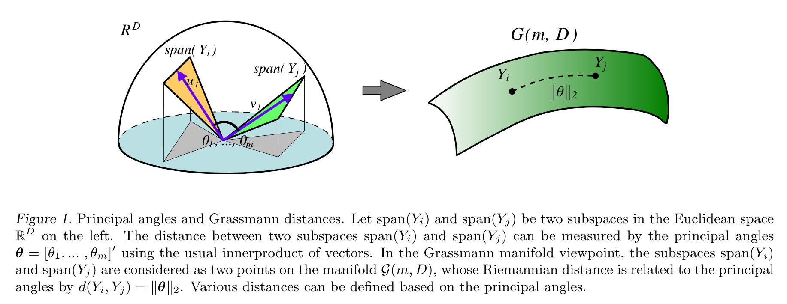
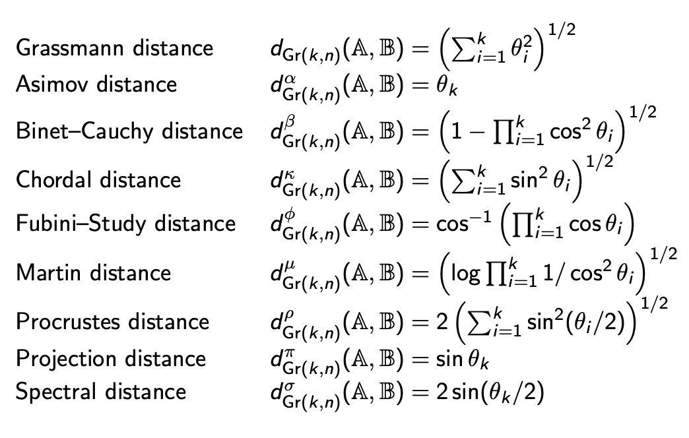

子空间的距离
在机器学习研究中，我们有时会遇到以“一个集合的向量”而非“一个向量”为基本元素的问题，为此需要定义这些向量集合之间的距离。特别地，如果允许我们将每个向量集合视作一个线性子空间，那么问题就变成了如何度量两个线性子空间之间的距离。
Grassmann Manifold
用数学语言描述，设 \(a_1,\ldots,a_k\in\mathbb R^n\) 和 \(b_1,\ldots,b_k\in\mathbb R^n\) 是两个线性无关向量组 (\(1\leq k\leq n\))，分别张成 \(k\) 维子空间： \[ \mathcal A=\text{Span}\{a_1,\ldots,a_k\}\subset\mathbb R^n,\quad \mathcal B=\text{Span}\{b_1,\ldots,b_k\}\subset\mathbb R^n \] 我们希望寻求一个度量 \(d(\mathcal A,\mathcal B)\) 来衡量子空间 \(\mathcal A\) 和 \(\mathcal B\) 之间的距离。
从泛函分析的角度来讲，“距离”应该定义在一个集合上。因此，定义 Grassmann manifold 为 \(\mathbb R^n\) 上所有 \(k\) 维线性子空间构成的集合： \[ \text{Gr}(k,n)=\{k\text{-dim linear subspaces of }\mathbb R^n\} \] 那么 \(\mathcal A,\mathcal B\in \text{Gr}(k,n)\). 也就是说，从 Grassmann manifold 的角度，子空间 \(\mathcal A,\mathcal B\) 可以视为 \(\text{Gr}(k,n)\) 上的两个点，\(d(\mathcal A,\mathcal B)\) 是这两个点之间的距离。

Principle Angles
为了寻求 \(d(\mathcal A,\mathcal B)\)，我们从最简单的情形入手。当 \(n=2,k=1\) 时，\(\mathcal A,\mathcal B\) 是二维平面上的过原点的直线，那么一个自然的想法是用直线间的夹角作为距离度量： \[ d(\mathcal A,\mathcal B)=\theta,\quad\text{where }\cos\theta=a^Tb\;(\Vert a\Vert=\Vert b\Vert=1) \] 受到二维情形的启发，当 \(n>2\) 时，我们先在 \(\mathcal A,\mathcal B\) 中分别找一个方向，使得夹角尽可能小（点积尽可能大）： \[ \begin{align} \max\quad& a^Tb\\ \text{s.t.}\quad&a\in \mathcal A,\,b\in \mathcal B\\ &\Vert a\Vert=\Vert b\Vert=1 \end{align} \] 设最优解为 \(a_1^\ast,b_1^\ast\). 接下来再分别找一个方向，使得夹角尽可能小，但要求与前一个方向正交： \[ \begin{align} \max\quad& a^Tb\\ \text{s.t.}\quad& a\in \mathcal A,\,b\in \mathcal B\\ &\Vert a\Vert=1,\,a^Ta_1^\ast=0\\ &\Vert b\Vert=1,\,b^Tb_1^\ast=0 \end{align} \] 以此类推，我们不断地找与已知方向正交的、夹角最小的方向： \[ \begin{align} \max\quad&a^Tb\\ \text{s.t.}\quad& a\in \mathcal A,b\in \mathcal B\\ &\Vert a\Vert=1,\,a^Ta_1^\ast=\cdots=a^Ta_{j-1}^\ast=0\\ &\Vert b\Vert=1,\,b^Tb_1^\ast=\cdots=b^Tb_{j-1}^\ast=0\\ \end{align} \] 这样定义了 \(k\) 个优化问题。设它们的最优解分别为 \(a_1^\ast,b_1^\ast,\ldots,a_k^\ast,b_k^\ast\)，则每一对解之间的夹角余弦值为： \[ \cos\theta_j={a_j^\ast}^T b_j^\ast,\quad j=1,\ldots,k \] 称这些夹角 \(\{\theta_1,\ldots,\theta_k\}\) 为 principle angles.
由于这 \(k\) 个优化问题是顺序求解的，所以一定有 \(\theta_1\leq\cdots\leq\theta_k\)；又因为 \(0\leq {a_j^\ast}^Tb_j^\ast\leq 1\)，所以 \(0\leq\theta_j\leq\pi/2\).
Grassmann Distance
在 principle angles 的基础上，定义 Grassmann distance 为： \[ d(\mathcal A,\mathcal B)=\left(\sum_{i=1}^k\theta_i^2\right)^{1/2} \]
也即向量 \((\theta_1,\ldots,\theta_k)\) 的 2-范数。有文献指出 Grassmann distance 等价于 Grassmann manifold 上的测地距离。
事实上，除了 Grassmann distance，基于 principle angles 还可以定义很多距离：

Computation: SVD
至此，虽然我们用 \(k\) 个优化问题定义出了 principle angles，进而定义出了 Grassmann distance，但显然不能真的靠依次解优化问题来计算。事实上，principle angles 可以通过奇异值分解计算，下面进行推导。
不妨设 \(a_1,\ldots,a_k\) 和 \(b_1,\ldots,b_k\) 都是单位正交向量，不然可以通过 Gram-Schmidt 正交化过程做到。设 \(A=[a_1,\ldots,a_k]\in\mathbb R^{n\times k}\)，\(B=[b_1,\ldots,b_k]\in\mathbb R^{n\times k}\)，则 \(A,B\) 均是 orthonormal 矩阵。于是第一个优化问题可以改写作： \[ \begin{align} \max\quad& (Ax)^T(By)\\ \text{s.t.}\quad&\Vert Ax\Vert=\Vert By\Vert=1\\ &x\in\mathbb R^k,\;y\in\mathbb R^k \end{align} \] 根据正交性，\(A\) 不改变 \(x\) 的长度，所以 \(\Vert Ax\Vert=1\iff \Vert x\Vert=1\iff x^Tx=1\)，\(\Vert By\Vert\) 同理，因此问题等价于： \[ \begin{align} \max\quad& x^TA^TBy\\ \text{s.t.}\quad&x^Tx=y^Ty=1\\ &x\in\mathbb R^k,\;y\in\mathbb R^k \end{align} \] 定义拉格朗日函数： \[ L(x,y,\lambda,\mu)=x^TA^TBy-\lambda(x^Tx-1)-\mu(y^Ty-1) \] 求导令为零： \[ \dfrac{\partial L}{\partial x}=A^TBy-2\lambda x=0\implies A^TBy=2\lambda x \] 这意味着 \(x,y\) 是 \(A^TB\) 的左右奇异向量，\(2\lambda\) 是对应奇异值。进一步地，为了最大化优化目标 \(x^TA^TBy=2\lambda\)，应取 \(2\lambda\) 为最大奇异值。依据同样的道理，第二个优化问题的最优解就是次大奇异值和对应奇异向量……第 \(k\) 个优化问题的最优解就是第 \(k\) 大的奇异值和对应奇异向量。
综上，principle angles 可以按如下方式计算：
首先对 \(A^TB\in\mathbb R^{k\times k}\) 做 SVD： \[ A^TB=U\Sigma V^T \] 其中 \(\Sigma=\text{diag}(\sigma_1,\ldots,\sigma_k)\) 且 \(\sigma_1\geq \cdots\geq\sigma_k\).
计算 principle angles： \[ \cos\theta_i=\sigma_i,\quad i=1,\ldots,k \]
简便起见，这两步也可以用一个式子表示： \[ A^TB=U\cos(\Theta)V^T,\quad \Theta=\text{diag}(\theta_1,\ldots,\theta_k),\quad \theta_1\leq\cdots\leq\theta_k \]
有了 principle angles，Grassmann distance 就好计算了： \[ d(\mathcal A,\mathcal B)=\left(\sum_{i=1}^k\theta_i^2\right)^{1/2} \] 特别地，对于上一节最后表格中的 Chordal distance，有： \[ d^\kappa(\mathcal A,\mathcal B)=\left(\sum_{i=1}^k\sin^2\theta_i\right)^{1/2}=\left(\sum_{i=1}^k\left(1-\cos^2\theta_i\right)\right)^{1/2}=\left(\sum_{i=1}^k\left(1-\sigma_i^2\right)\right)^{1/2}=\left(k-\sum_{i=1}^k\sigma_i^2\right)^{1/2} \] 由于奇异值的平方和等于矩阵 F-范数的平方，所以： \[ d^\kappa(\mathcal A,\mathcal B)=\left(k-\Vert A^TB\Vert_F^2\right)^{1/2} \] 因此使用 Chordal distance 时我们甚至用不着做 SVD，直接算 \(A^TB\) 的 F-范数（所有元素的平方和）就够了，非常方便。
Extension: Different Dimensions
截至目前，我们假设 \(\mathcal A\) 和 \(\mathcal B\) 具有相同的维度 \(k\)，但如果 \(\mathcal A,\mathcal B\) 维度不同（不妨设 \(\mathcal A\) 比 \(\mathcal B\) 维度更小）该怎么办呢？一个想法是：将 \(\mathcal A\) “膨胀”到后再与 \(\mathcal B\) 比较，或者将 \(\mathcal B\) “缩减”后再与 \(\mathcal A\) 比较。
具体而言，设 \(\mathcal A\) 是 \(\mathbb R^n\) 中的 \(k\) 维子空间而 \(B\) 是 \(l\) 维子空间，其中 \(1\leq k\leq l\leq n\)，即： \[ \mathcal A\in\text{Gr}(k,n),\quad\mathcal B\in\text{Gr}(l,n),\quad1\leq k\leq l\leq n \] 定义 Schubert varieties 为： \[ \begin{align} \Omega_+(\mathcal A)&=\{\mathcal P\in\text{Gr}(l,n)\mid \mathcal A\subseteq\mathcal P\}\\ \Omega_-(\mathcal B)&=\{\mathcal P\in\text{Gr}(k,n)\mid \mathcal P\subseteq\mathcal B\} \end{align} \] 例如，一条直线的 \(\Omega_+\) 可以是包含这条直线的所有平面；反过来，一个平面的 \(\Omega_-\) 可以是该平面包含的所有直线。
于是 \(\Omega_+(\mathcal A)\) 与 \(\mathcal B\) 之间的距离可以定义为： \[ \delta_+(\mathcal A,\mathcal B)=\min\{d(\mathcal P,\mathcal B)\mid\mathcal P\in\Omega_+(\mathcal A)\} \] 类似的，\(\mathcal A\) 与 \(\Omega_-(\mathcal B)\) 之间的距离可以定义为： \[ \delta_-(\mathcal A,\mathcal B)=\min\{d(\mathcal A,\mathcal P)\mid\mathcal P\in\Omega_-(\mathcal B)\} \] 文献 (Ye-Lim, 2016) 证明： \[ \delta_+(\mathcal A,\mathcal B)=\delta_-(\mathcal A,\mathcal B)=\left(\sum_{i=1}^{\min(k,l)}\theta_i^2\right)^{1/2} \] 其中： \[ A^TB=U\cos(\Theta)V^T,\quad \Theta=\text{diag}\left(\theta_1,\ldots,\theta_{\min(k,l)},\pi/2,\ldots,\pi/2\right),\quad \theta_1\leq\cdots\leq\theta_{\min(k,l)} \] 因此即便 \(\mathcal A,\mathcal B\) 维度不同，也可以用与上一节相同的方法计算二者的距离。
值得说明的是，此时 \(\delta(\mathcal A,\mathcal B)\) 其实并不满足距离的性质。例如，当 \(\mathcal A\subset \mathcal B\) 时，有 \(\delta(\mathcal A,\mathcal B)=0\)，不满足非负性，进而不满足三角不等式，但满足对称性。
参考资料
- Hamm, Jihun, and Daniel D. Lee. Grassmann discriminant analysis: a unifying view on subspace-based learning. In Proceedings of the 25th international conference on Machine learning, pp. 376-383. 2008. ↩︎
- Ye, Ke, and Lek-Heng Lim. Schubert varieties and distances between subspaces of different dimensions. SIAM Journal on Matrix Analysis and Applications 37, no. 3 (2016): 1176-1197. ↩︎
- Jackson Van Dyke. Distances between subspaces. link ↩︎
- Lek-Heng Lim. distances between objects of different dimensions. link ↩︎